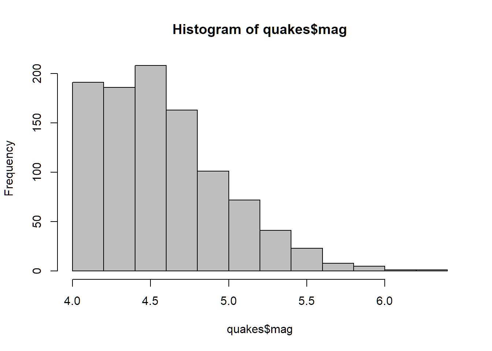
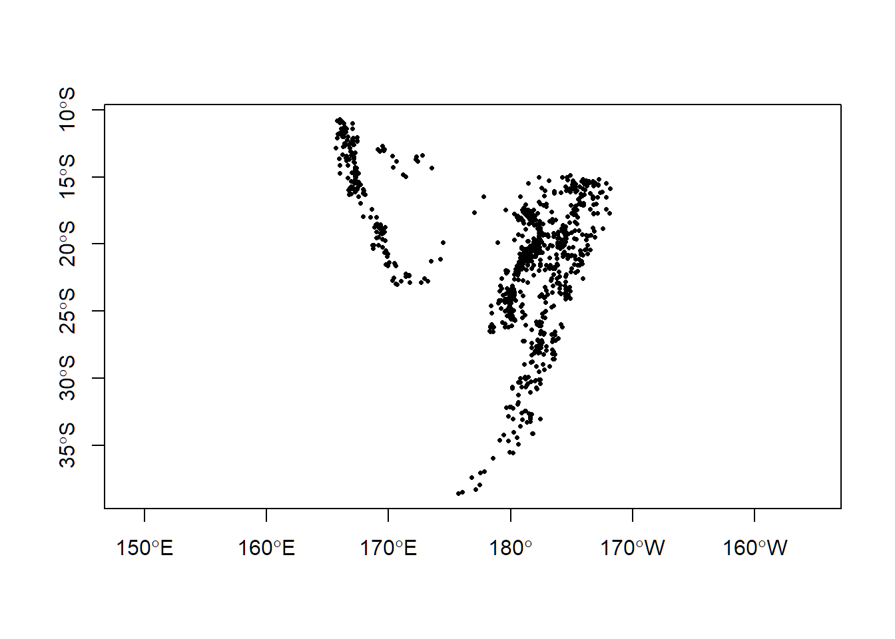
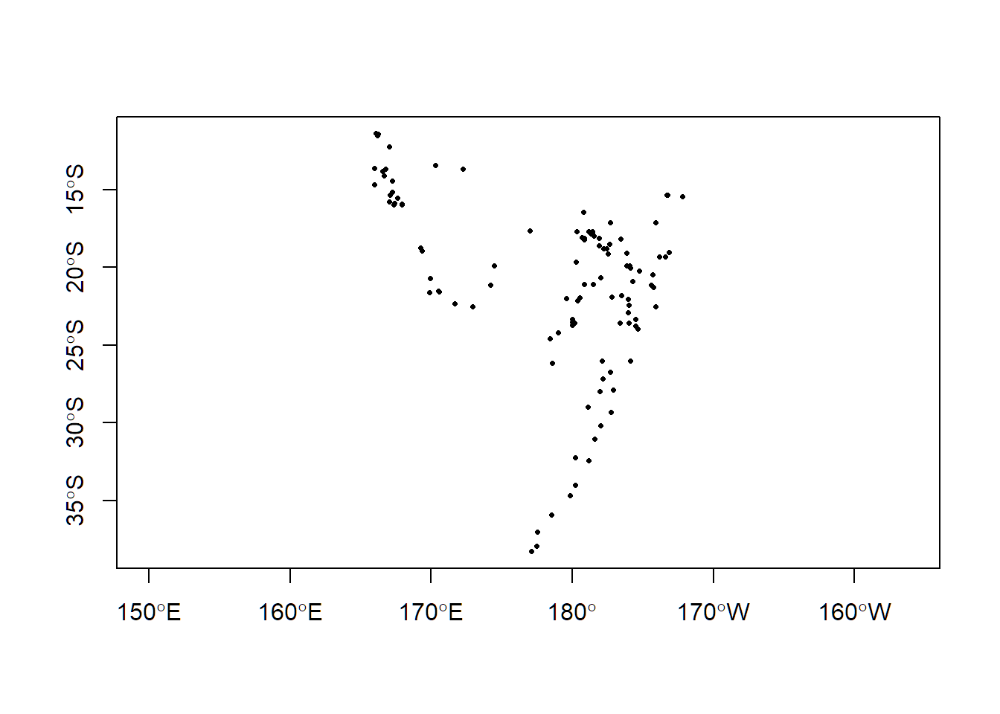
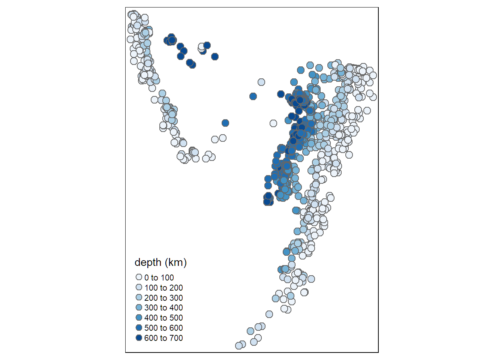
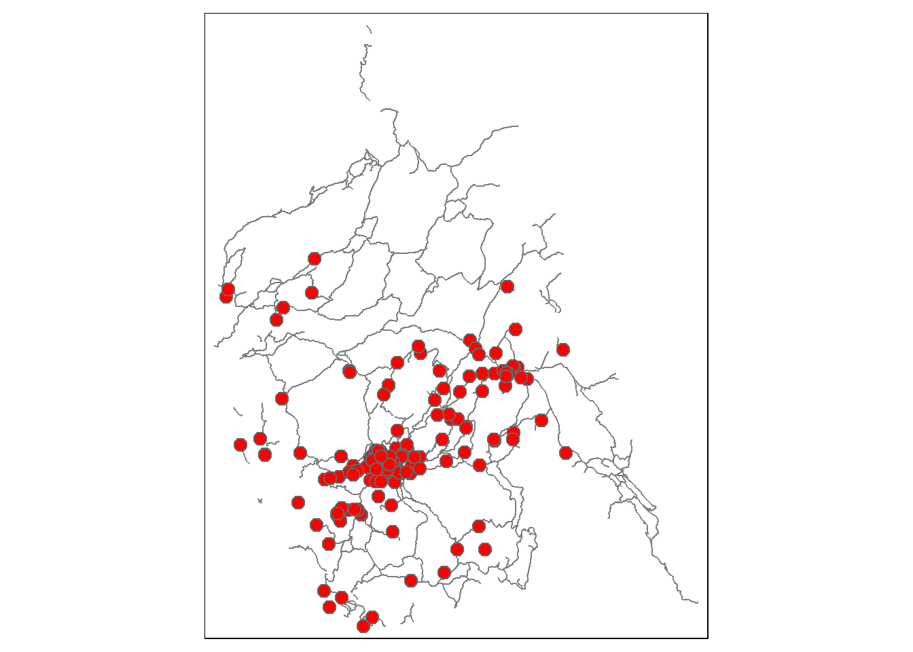

Create a new R script in RStudio (File → New File → R Script).
Click the ‘Copy’ button below to copy the questions to the clipboard, then paste them into your script. Under each question, write R code. Run each line of R code as you enter it (press the Run button or ctrl+enter) to make sure it works.
Remember to save your script periodically to avoid losing work if RStudio crashes.
If you get stuck, click on the ‘hint’ link to see a hint, or the question number to see the answer. Click again to hide.
Questions? Ask the instructor.
####################################
#### EXPLORE THE QUAKES DATASET ####
####################################
# In this section, you’ll explore the ‘quakes’ dataset, which is part of base R
# (run ?quakes for details).
# 1. How many rows are in quakes?
nrow(quakes)## [1] 1000# 2. What is the minimum and maximum depth of the quakes in this dataset?
range(quakes$depth)## [1] 40 680## You could also do:
summary(quakes$depth)## Min. 1st Qu. Median Mean 3rd Qu. Max.
## 40.0 99.0 247.0 311.4 543.0 680.0## or:
library(dplyr)
quakes %>% pull(depth) %>% summary()## Min. 1st Qu. Median Mean 3rd Qu. Max.
## 40.0 99.0 247.0 311.4 543.0 680.0⇒ 40 to 680 km.
# 3. Create a histogram of the magnitude.
hist(quakes$mag, col = "gray")
# 4. What was the most common magnitude?
By definition, the median is the most common value of a dataset.
median(quakes$mag)## [1] 4.6########################
#### MAPPING QUAKES ####
########################
# 5. Convert quakes into a simple feature data frame. Plot it.
Use sf::st_as_sf()
You can use either WGS84 or NAD83 as the datum.
quakes_sf <- sf::st_as_sf(quakes, coords=c("long", "lat"), crs=4326)
plot(quakes_sf %>% sf::st_geometry(), pch = 16, cex = 0.5, axes = TRUE)
# 6. Plot the top 10% of quakes in terms of magnitude.
plot(quakes_sf %>% top_frac(0.1, mag) %>% sf::st_geometry(), pch = 16, cex = 0.5, axes = TRUE)
# 7. Plot the quakes colored by depth.
tmap::tmap_mode("plot")## tmap mode set to plottingtmap::tm_shape(quakes_sf) +
tmap::tm_symbols(col = "depth",
size = 0.5,
palette = "Blues",
title.col = "depth (km)")
#############################################
#### EXPLORE THE MISSING PERSONS DATASET ####
#############################################
# 8. Import Yosemite missing persons file and list the column names.
missing_df <- read.csv("./data/yosemite_missing_people.csv", stringsAsFactors = FALSE)
names(missing_df) ## [1] "ï..X" "Y" "OBJECTID_1" "OBJECTID" "Georef_Unc" "Distance" "Type" "Lat"
## [9] "Long" "Extent" "CaseNumber" "SARNumber" "IncidYear" "DateTimeLa" "DateTimeIn" "DateTimeSu"
## [17] "DateTIme_1" "ContactMet" "EcoRegionD" "EcoRegio_1" "IncidType" "NumberofSu" "GroupDynam" "SubjectCat"
## [25] "SubSex" "SubAge" "IPPType" "IPPClassif" "IncidContr" "IncidOutco" "Scenario" "SubjMedInj"
## [33] "RescueMeth" "LostPerson" "IPP_GR_Loc" "IPP_GR_Typ" "IPP_GR_Pat" "IPP_GR_Not" "Intended_D" "FindFeatur"
## [41] "Found_GR_L" "Found_GR_T" "Found_GR_P" "Found_GR_N" "Motorized_" "Incident_N" "TotalTimeM" "TotalSearc"
## [49] "GlobalID"# OR
# tibble::glimpse(missing_df) # 9. Compute the number of people reported missing per year. Which year had the
# greatest number of missing persons?
Use columns ‘IncidYear’ and ‘NumberofSu’
missing_df %>%
dplyr::group_by(IncidYear) %>%
dplyr::summarise(sum_missing = sum(NumberofSu))## # A tibble: 11 x 2
## IncidYear sum_missing
## <int> <int>
## 1 2000 32
## 2 2001 24
## 3 2002 21
## 4 2003 27
## 5 2004 20
## 6 2005 37
## 7 2006 25
## 8 2007 34
## 9 2008 23
## 10 2009 45
## 11 2010 26⇒ 2009 had the greatest number of missing persons reported.
# 10. Compute a frequency table of the incident outcome. What percentage of incident
# reports ended in the lost person(s) being found alive?
Use column ‘IncidOutco’
missing_df %>% dplyr::group_by(IncidOutco) %>% count()## # A tibble: 4 x 2
## # Groups: IncidOutco [4]
## IncidOutco n
## <chr> <int>
## 1 Subject Found Alive 200
## 2 Subject Found DOA 9
## 3 Subject Found Injured 3
## 4 Subject Found Medical 1missing_df %>% dplyr::filter(IncidOutco == "Subject Found Alive") %>%
dplyr::count() %>%
as.numeric() /
(missing_df %>% dplyr::count() %>% as.numeric())## [1] 0.9389671# 11. Create a simple features data frame from the missing persons.
Use st_as_sf()
The EPSG number for geographic coordinates (WGS84) is 4326.
yose_missing_ll <- sf::st_as_sf(missing_df, coords=c("Long", "Lat"), crs=4326)# 12. Project the missing persons location to UTM Zone 11 (NAD83).
The EPSG number for UTM Zone 11 North (NAD83) is 26911.
epsg_utm11n_nad83 <- 26911
yose_missing_utm <- yose_missing_ll %>% sf::st_transform(epsg_utm11n_nad83)# 13. Import the trails layer. What projection system is it in?
Import the trails with:
## Define the path to the file geodatabase
gdb_fn <- "./data/yose_trails.gdb"
yose_trails <- sf::st_read(gdb_fn, layer="Trails")## Define the path to the file geodatabase
gdb_fn <- "./data/yose_trails.gdb"
yose_trails <- sf::st_read(gdb_fn, layer="Trails")## Reading layer `Trails' from data source `C:\Workshops\R-Spatial\rspatial_mod\outputs\rspatial_bgs20\docs\data\yose_trails.gdb' using driver `OpenFileGDB'
## Simple feature collection with 1074 features and 13 fields
## geometry type: MULTILINESTRING
## dimension: XY
## bbox: xmin: 245134 ymin: 4153668 xmax: 323239.7 ymax: 4250703
## CRS: 26911⇒ The trails are in EPSG = 26911 (UTM Zone 11 North NAD83)
# 14. Plot the missing persons over the trails layer. Do they seem spatially related?
tmap::tmap_mode("plot")## tmap mode set to plottingmymap <- tmap::tm_shape(yose_trails) +
tmap::tm_lines(col = "gray50") +
tmap::tm_shape(yose_missing_utm) +
tmap::tm_symbols(col = "red", size = 0.5)
mymap
It does seem as if most missing persons are reported along trails.
# 15. Export the projected missing persons layer as a Shapefile, keeping only the
# following columns: IncidYear, DateTimeLa, IncidType, NumberofSu, and SubAge.
Use sf::st_write
To tell it which columns to export, look for a function from the dplyr package.
sf::st_write(yose_missing_utm %>%
dplyr::select(IncidYear, DateTimeLa, IncidType, NumberofSu, SubAge),
dsn = "missing_persons.shp",
delete_dsn = TRUE)‘delete_dsn’ ⇒ overwrite existing